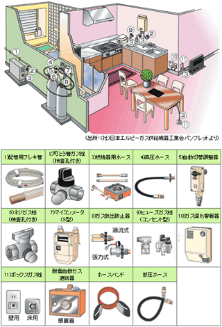

お電話：083-972-0039
FAX：083-973-4299
メール：
保安・点検・修理業務
より安全にお使いいただくために。
ＬＰガスの普及（現在約２６，０００千世帯）とともに、お客様（消費者）での事故発生が増大し、その安全対策として、異常なガスの流れを感知すると、自動的に遮断する機能がついたマイコンメータが１９８６（昭和６１）年から導入されました。
また、１９９３（平成５）年９月末を期限として、マイコンメータに代表される「安全器具普及100％活動」が、官民一体となって展開、実施されました。その結果、この間に事故は大幅に減少しました（８７年５１５件→９４年８２件）。
今後は、一酸化炭素（ＣＯ）事故防止対策と埋設配管が課題となります。
生田では、お客様の安全を守る為に、法令に定められた期限の元、保安点検、機器（メータ・調整器・警報器等）の取り付け・交換などを行っています。
壊れたままの機械を使っていると、ガス漏れや漏電で大変危険でもあり、エネルギーを無駄に消費してしまい光熱費も余計にかかってしまいます。
なにか「おやっ」と感じる事があったり、その他ガス機器の修理や点検について、お気付きの点やご不明な点などあれば、お気軽におたずね下さい。
家庭用LPガス設備と安全器具の一例

（出所：（社）日本エルピーガス供給機器工業会パンフレットより）
営業時間 9：00〜18：00 定休日 日曜日
754-0002 山口県山口市小郡下郷2252 TEL：083-972-0039 FAX：083-973-4299
Copyright (C) IKUTA Co.,LTD. all rights reserved.

754-0002 山口県山口市小郡下郷2252 TEL：083-972-0039 FAX：083-973-4299
Copyright (C) IKUTA Co.,LTD. all rights reserved.